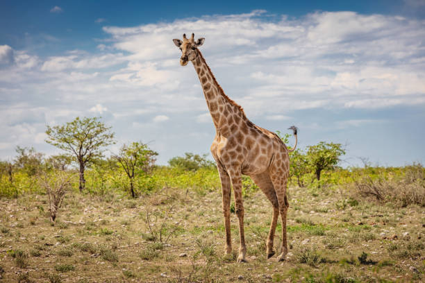
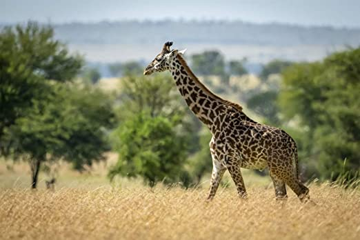
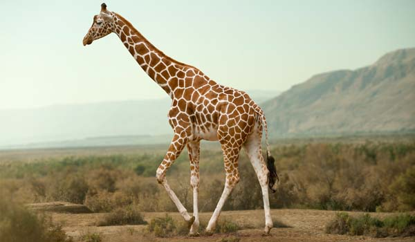
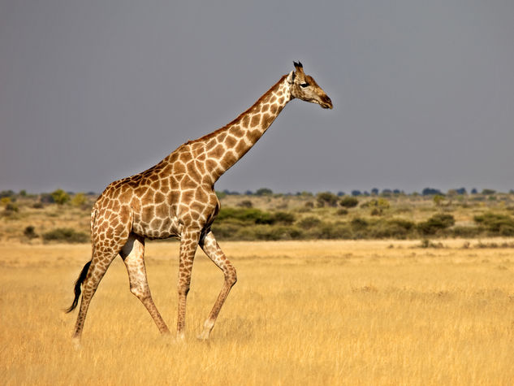

Giraffe
Le 4 specie principali di giraffa
- Giraffa meridionale

- Masai giraffa

- Giraffa reticolata

- Giraffa settentrionale

Curiosità sulle giraffe
L'aspettativa di vita di una giraffa va dai 25 anni ai 35 anni
Le giraffe sono molto alte infatti vanno dai 4,6m ai 6,1m!!
Dove vivono le giraffe?
| Giraffa meridionale | Africa meridionale |
| Masai giraffa | Africa sub sahariana |
| Giraffa reticolata | Somalia |
| Giraffa settentrionale | Angola |
cliccando questo link potrete vedere un breve documentario sulle giraffe nel loro habitat naturale